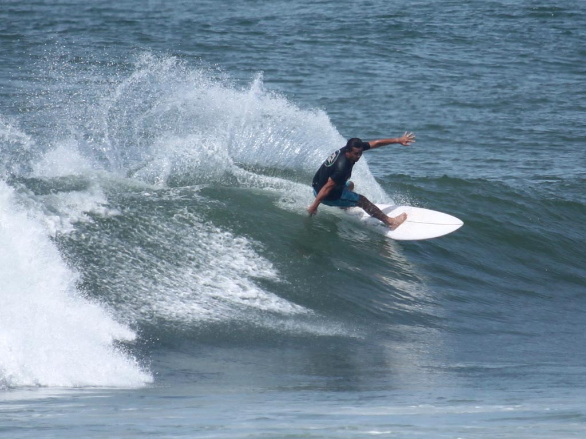

Home / Surfing Playa Hermosa
Surfing Playa Hermosa.
A World Surfing Reserve and the National Surf Stadium of Costa Rica — waves nearly every day of the year, a short walk from your door.
A World Surfing Reserve and the National Surf Stadium of Costa Rica — waves nearly every day of the year, a short walk from your door.
Playa Hermosa has earned a reputation as one of the world's premier surf destinations. Known as the National Surf Stadium of Costa Rica, it delivers wave action almost year-round — only about seven flat days a year. You'll find slow, forgiving walls at high tide and fast, hollow tubes and barrels at low. Smaller in the dry season, bigger when the rains bring the swell.
The whole stretch is recognized as a World Surfing Reserve by the Save The Waves Coalition — a stamp that underlines how environmentally and culturally important this break really is.

▶ Watch: Costa Rica's Surfing ParadisePlaya Hermosa is known for exceptional consistency. With only about seven surfable-wave-free days a year, there's almost always something to paddle into. Quality shifts with tide and season: high tide softens the wave, low tide draws experienced surfers chasing barrels. Mornings and evenings often go glassy, especially in the dry season.
Every Saturday the beach comes alive with competition, drawing pros and amateurs for cash prizes — a real hub for the local surf community. Playa Hermosa also regularly hosts the Costa Rican Championships, often with the grand finale right here.
The dependable one — rarely a flat day. The beach structure throws fast, hollow waves at low tide for barrel hunters, then mellows at high tide for a more relaxed ride.
Powerful waves and proper tubes — one for advanced surfers. Best in the morning while the wind is still offshore.
The variety spot. Wave patterns change a lot with the tide — slower and manageable on the high, quicker and more demanding on the low. In the dry season it's often a good alternative when other breaks get too big.
Popular in recent years, and usually room to park. Waves vary a lot by season — smaller in the dry months, bigger in the rains. Early mornings and late afternoons go glassy, a favorite of surfers and photographers alike.
A named break along the same stretch, by the bend in the road our La Curva apartment is named for — handy reference point as you walk the beach reading the sandbars.
Less surfed, and on bigger swells it can serve up genuinely challenging conditions. A little more remote — surf it with others and keep an eye on the currents.
| Condition | What to expect |
|---|---|
| High tide | Slower, softer waves — relaxed sessions, friendlier for less experienced surfers. |
| Low tide | Faster, more powerful, hollow waves — for adrenaline and barrels. |
| Dry season (Dec–Apr) | Smaller waves, frequent glassy mornings and evenings. |
| Rainy / green season | The biggest swells of the year. |
Coconut Office sits steps from the lineup, with a real coworking space and fast fiber for when the surf goes flat. Work, surf, repeat.
See the apartments